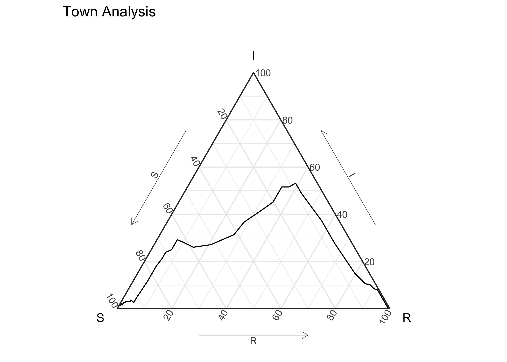
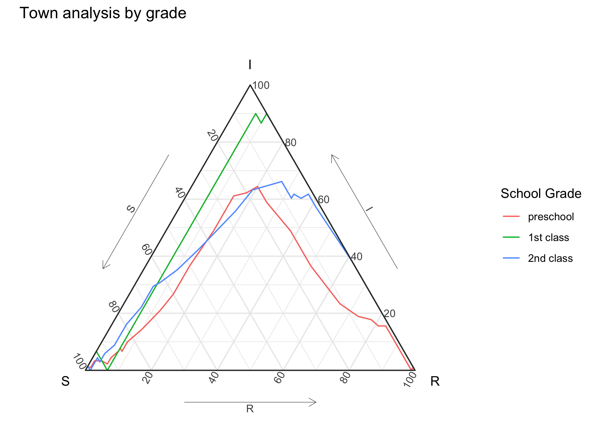
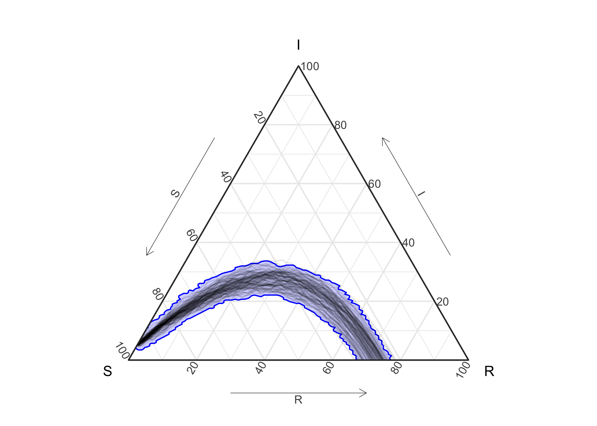

The goal of EpiCompare is to provide the epidemiology community with easy-to-use tools to encourage comparing and assessing epidemics and epidemiology models in a time-free manner. All tools attempt to adhere to tidyverse/ggplot2 style to enhance easy of use.
Time free analysis allows for stronger comparison of epidemics and model based simulations avoiding different scaling and shifts of time that mess up time-based comparisons.
To achieve this goal, the package contains:
-
Visualization tools to visualize SIR epidemics and simulations from SIR models in a time-free manner using
ggtern’s ternary plots and prediction bands. For agent-based SIR models we also provide visualization tools to let the user easily explore how different characteristics of the agents relate to different experiences in the epidemic. - General comparison tools to compare epidemics and epidemic models that have higher numbers of states (again in a time-free manner), allowing for the user to examine the differences between models through simulations, and if an epidemic is similar to a model through simulations and prediction bands.
-
Conversion tools to:
- Convert and then compare models from standard epidemic packages like
EpiModels,pomp, as well as internal agent-based models, and epidemics in a common framework. - Convert agent-based information into aggregate to compare in the aggregate framework described above.
- Convert and then compare models from standard epidemic packages like
Installation
You can install the developmental version of EpiCompare from github using:
# install.packages("devtools") devtools::install_github("skgallagher/EpiCompare")
Data
Description of data including in this package can be found in the data section of the reference page of the documentation website.
Example
The following example comes from a Measles outbreak in Hagelloch, Germany in 1861. We have data on each child (agent) in the town.
hagelloch_raw %>% ggplot(aes(y = tI, z = tR)) + geom_aggregate() + coord_tern() + labs(x = "S", y = "I", z = "R", title = "Town Analysis")

Previous work has suggested that the class (CL) the student was in effected how the experienced the outbreak. The below figure shows differences in the outbreak relative to this grouping.
hagelloch_raw %>% rename(`school grade` = CL) %>% group_by(`school grade`) %>% summarize(`number of students` = n()) #> # A tibble: 3 x 2 #> `school grade` `number of students` #> <fct> <int> #> 1 preschool 90 #> 2 1st class 30 #> 3 2nd class 68 hagelloch_raw %>% ggplot(aes(y = tI, z = tR, color = CL)) + geom_aggregate() + coord_tern() + labs(x = "S", y = "I", z = "R", color = "School Grade", title = "Town analysis by grade")

Simulate SIR data
n_sims <- 100 n_time_steps <- 100 beta <- .1 gamma <- .03 init_SIR <- c(950, 50, 0) out <- simulate_SIR_agents(n_sims = n_sims, n_time_steps = n_time_steps, beta = beta, gamma = gamma, init_SIR = init_SIR) df_groups <- out %>% dplyr::group_by(sim) %>% agents_to_aggregate(states = c(tI, tR)) %>% rename(S = X0, I = X1, R = X2) df_groups %>% ggplot() + geom_prediction_band(aes(x = S, y = I, z = R, sim_group = as.numeric(sim)), alpha = .2, fill = "blue", color = "blue") + geom_line(aes(x = S, y = I, z = R, group = sim), alpha = .1) + coord_tern() #> Warning: Ignoring unknown aesthetics: z

Package Creation Notes:
- For writing code that works with
tidyverse1.0 vstidyverse<= 0.8.3. We followed ideas found in tidyr: in-packages, for the code, and - when working with Travis CI (using a matrix for multiple builds) - we leverage ideas in tidyverse travis on github and tidyverse principles. - For writing your own
geoms andstats that works withggtern(which are generally restricted), the following 2 stack-exchange articles helped use do so with ease:stack-exchange: being able to access ggtern’s element write away
Finally, we’ve also leveraged ideas from R-devel: on avoiding problems with
:::inR/aaa.Rto overcome messages from CRAN relative to this hack (using:::). For some reason - when documenting forpkgdownwebsite, we need to dolibrary(ggtern); EpiCompare:::update_approved_layers()
-
geom_prediction_bandrequired not justcompute_groupbutcompute_layer- there is very little documentation on how to approach this correctly. Basically - there are problems when thecompute_groupwants to make multiplepieces/groups- and it is similar to the problem that if you do something likeaes(color = var1, group = var2)you may actually want to doaes(color = var1, group = paste(var1, var2)), if there are the samevar2values across differentvar1values but they don’t mean they should be grouped together.
Contributors
- Shannon Gallagher (
skgallagher) - Benjamin LeRoy (
benjaminleroy)